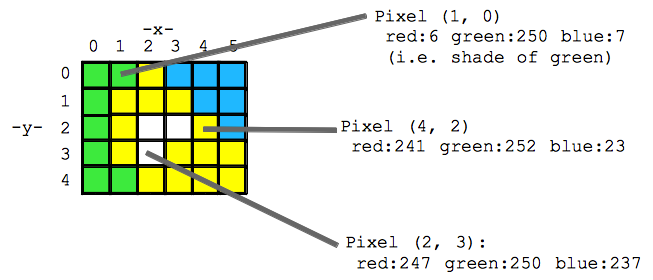
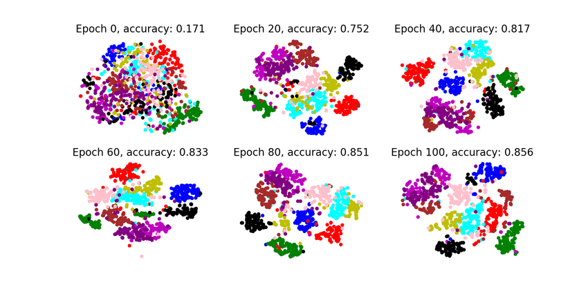
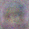
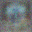
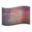
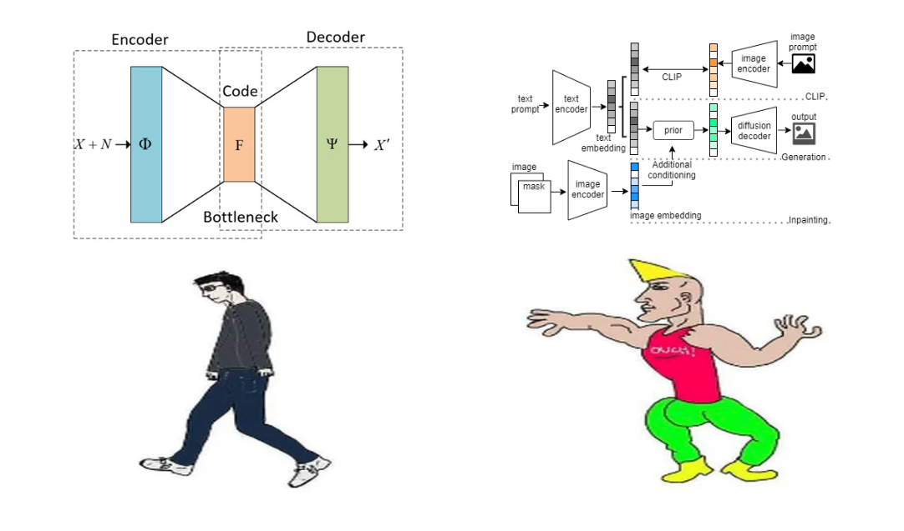
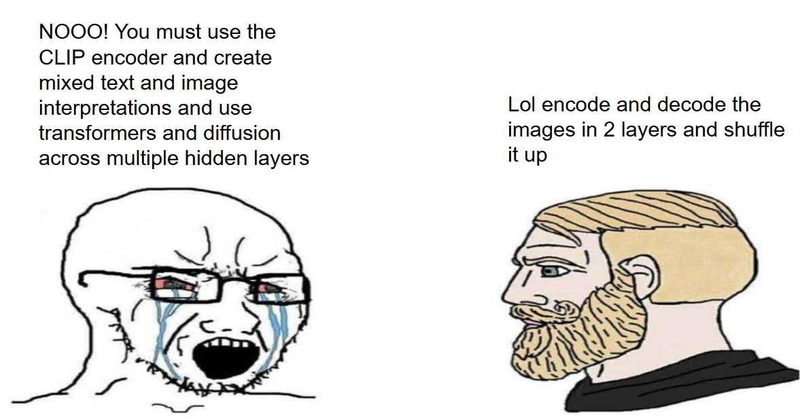
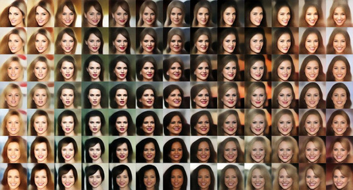
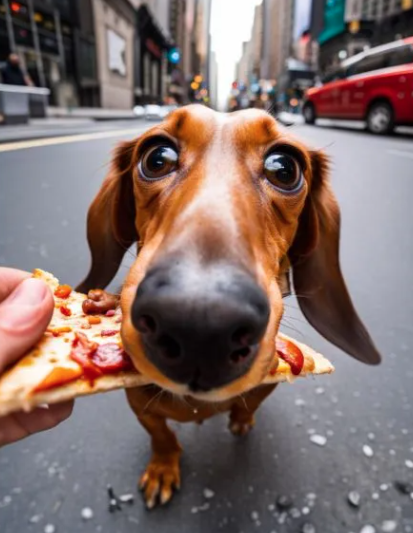
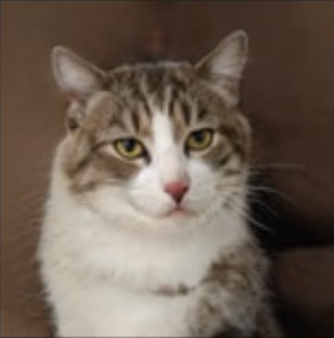

building a simple autoencoder from scratch in C


by Ryan Alport
1. teach a computer to compress an image into a "meaningful" numerical representation
2. explore the geometry of the space learned by our model
3. generate new, never before seen emojis with some cool javascript tools
4. consider how big time image generation builds off of these ideas

we know that any given RGB image can be represented as:
width * height * 3 floating point numbers
width * height * 3 floating point numbers
but those raw pixel values dont really tell us anything...
so how does a model learn to extract colors, shapes, or general structures from images?
the approach of autoencoding is to train a model to see an image, compress it into a single vector, then decompress that vector into the same image
we can evaluate how good the model is by comparing the before and after images, pixel by pixel (MSE to be precise)

(real reconstructed image by our model)
we compute how much each weight contributed to the error, this is the gradient.
then we move each weight in the opposite direction of the error:
weight = weight − learning_rate × gradient
this process is called backpropagation, errors flow backward through the network, the weights slowly approaching "correct" values
while image reconstruction is cool, it doesnt seem immediately useful, and for us its not...
what we are really concerned about is the compressed vector the model creates, we call it the latent
the reason it is so useful is because in well trained models, actual features are encoded into this vector
similar images have similar latent vectors, evidencing that we have created an "image space" which we may now explore...

(visualization by Zhang (2017) - Deep Unsupervised Clustering Using Mixture of Autoencoders)
we can now create entirely new vectors, either at specific points or random ones, and decode them to see where they take us
random latent
completely random latent vectors dont always have a feasible representation




latent sample
we can sample from the distribution of latent values to get more sensible outputs




known latent + noise
even easier we can just decode known images and add random noise to the latent


interpolation
we can also add, subtract, or smoothly move between two or more images


PCA manipulation
principal component analysis allows us to determine which values in the latent correspond to large visible changes
this javascript tool allows you to edit those values and see the decoded images live
this is a very small model with clear strengths and weaknesses

(our model vs DALL-E)
small model, small dataset - the face only model is trained on 97 unique 32x32 images and it contains just over 3 million parameters. the CLIP image encoder, used by DALL-E and Stable Diffusion has 100x the parameters and a training set of potentially billions
shallow connections - our model technically only has two layers, linear encoder, and linear decoder.
image → L → latent → L → image
a more advanced model would contain more intermediate layers where more abstract features could be learned
image → L → .. → L → latent → L → .. → L → image
image → L → latent → L → image
a more advanced model would contain more intermediate layers where more abstract features could be learned
image → L → .. → L → latent → L → .. → L → image
the latent space is not continuous - we cannot guarentee that any given point has a sensible representation, this is why random values for the latent decode to nonsense
pixel-wise loss function - mean squared error is just ok, in cases where multiple things are possible, the model tends towards blur or grey as it reaches for the average, in general our model doesnt have a truly generative goal
improvements to be made
what other ways can we generate images?
Thank You For Listening!
Resources
VAE image generation - Jinsol Kim
intro to autoencoders - Donald R. Bertucci
variational autoencoders animated - Deepia video
CNN visualized - Futurology video
stable diffusion in code - Computerphile video

(DALL-E engineers vs Ryan Alport)
the main upgrade to be made is the conversion to a variational autoencoder (VAE), this change in architecture forces structure into the latent space, meaning we can sample any point and get something nice.

(A continuous space of faces generated by Tom White using VAEs)
we could also speed up training and generation(meaning we could realistically use more parameters!) using hardware like the GPU or even simple multithreading
it would also be "trivial" to add text to image generation, see last week's demo for how we turn words into vectors, but we can write an encoder to map those vectors to images
potential topic of later meeting...
potential topic of later meeting...
diffusion is a very popular method for image generation where images start as pure noise which the model gradually removes until a coherenet image emerges. they are trained by adding noise to real images and teaching the model to reverse the process
generative adversarial networks (GANs) are a framework which uses adversarial training to produce realistic images. training consists of two models, one generates images while the other tries to determine if those images are authentic. the generator converges to be able to fool the discriminator.
autoregressive models generate images one piece at a time, predicting the next pixel or token based on what has already been generated.

diffusion sample

GAN sample
autoregressive sample
all code and presentation materials are written by Ryan Alport
please reach out to Ralport2005@gmail.com with any questions
VAE image generation - Jinsol Kim
intro to autoencoders - Donald R. Bertucci
variational autoencoders animated - Deepia video
CNN visualized - Futurology video
stable diffusion in code - Computerphile video